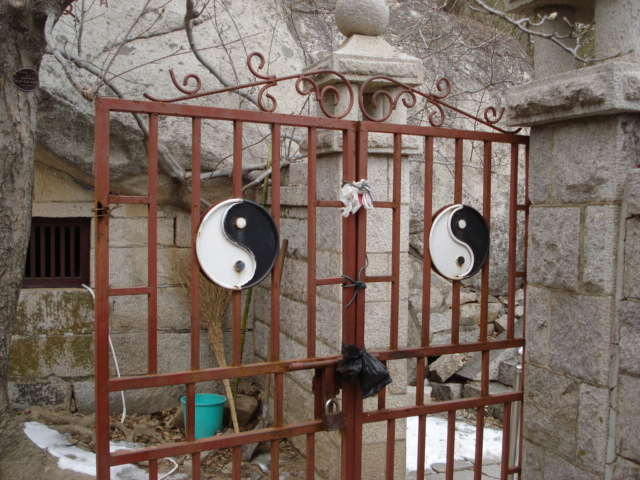

(continuation)
| Laoshan (continuation) |
GO TO PAGE 26 OF 31 | BACK TO DATE PAGE | ||||||||||||||
|  | ||||||||||||||||
| As I was getting ready to leave the cave/temple grounds and head back down, I noticed this gate for the first time. This symbol (Yin-Yang) represents the ancient Chinese understanding of how things work. The outer circle represents "everything," while the black and white shapes within the circle represent the interaction of two energies, called "yin" (represented in black) and "yang" (represented in white), which cause everything to happen. They are not completely black or white, just as things in life are not completely black or white, and they cannot exist without each other. While "yin" is dark, passive, downward, cold, contracting, and weak, "yang" is bright, active, upward, hot, expanding, and strong. The shape of the yin and yang secions of the symbol gives you a sense of the continual movement of these two energies, yin to yang and yang to yin, causing everything to happen: | ||||||||||||||||
| just as things expand and contract, and temperature changes from hot to cold. | ||||||||||||||||
| GO TO PAGE 26 OF 31 | BACK TO DATE PAGE | |||||||||||||||